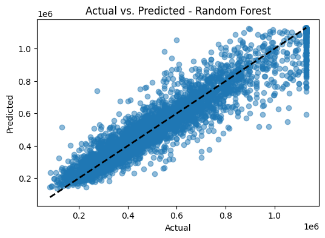

House Price Prediction
A Machine Learning Regression Project
Project Summary
This project involved building a regression model to accurately predict house prices based on a diverse set of features, such as location, size, and number of rooms. The entire machine learning workflow was explored, from data preprocessing and feature selection to model training and evaluation. The final model was deployed as an interactive web application using Streamlit, allowing users to input house features and receive a price prediction.

The Process
1. Preprocessing
Cleaned the dataset by handling missing values, encoding categorical features, and scaling numerical data to prepare it for modeling.
2. Feature Selection
Analyzed feature importance and correlation to select the most impactful variables for predicting house prices, reducing model complexity.
3. Model Training
Trained and compared several regression algorithms (e.g., Linear Regression, Random Forest) to find the best-performing model.
4. Deployment
Wrapped the final trained model in a user-friendly web interface using Streamlit, allowing for easy and interactive predictions.
Results & Learnings
Key Outcomes
The final regression model achieved a high R-squared value, indicating strong predictive accuracy. The Streamlit application successfully provided an intuitive interface for users to interact with the model. Feature analysis revealed that location and living area size were the most significant price drivers.
Lessons Learned
This project provided end-to-end experience in a real-world regression problem. I learned that feature engineering is as crucial as model selection for achieving high accuracy. Furthermore, deploying the model with Streamlit demonstrated the importance of making machine learning solutions accessible and understandable to non-technical users.
